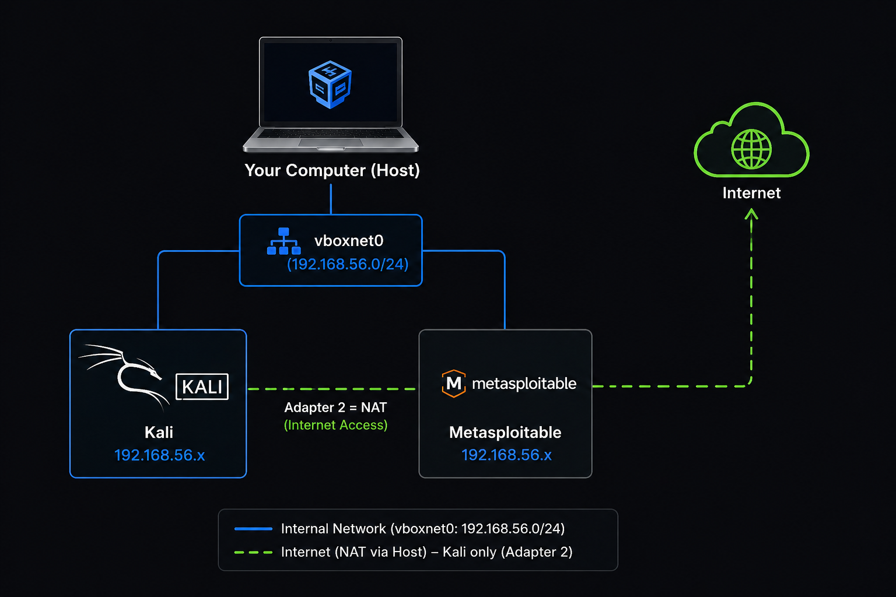
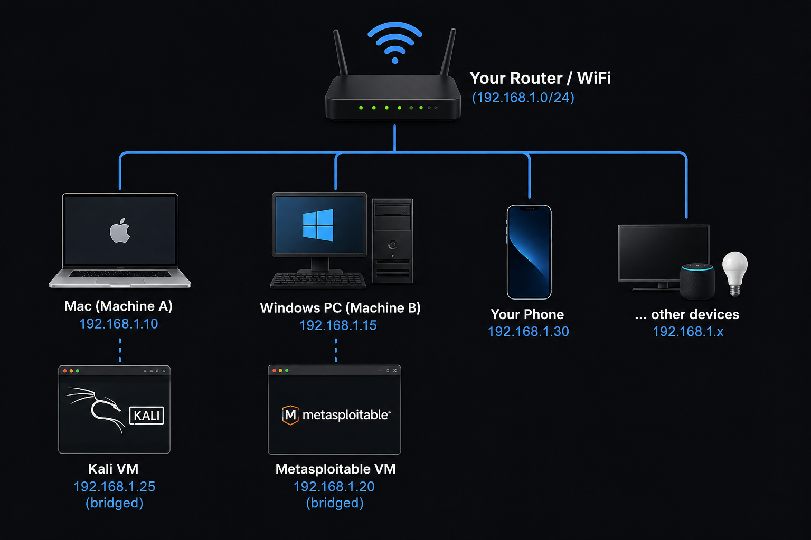

Everything you need to set up your hacking lab before watching the videos. Follow these steps once, then you're ready for the entire series.
Three things. Download all three before starting.
Open VirtualBox → File → Import Appliance → select the Kali .ova file you downloaded. Keep default settings. Click Import.
Metasploitable 2 comes as a .vmdk file (not .ova). In VirtualBox: click New → name it "Metasploitable 2" → Type: Linux → Version: Ubuntu (64-bit) → RAM: 512 MB → Use an existing virtual hard disk file → select the .vmdk file. Click Create.
This is where 90% of beginners break their lab. Both VMs must be on the same isolated network. If you skip this, nothing works.
VirtualBox → File → Host Network Manager → click Create. You'll see something like vboxnet0 with IP 192.168.56.1/24. Leave defaults. Close.
Click Kali VM → Settings → Network → Adapter 1 → change "Attached to" from NAT to Host-only Adapter → select vboxnet0. Click OK.
Same thing. Click Metasploitable VM → Settings → Network → Adapter 1 → Host-only Adapter → vboxnet0. Click OK.

With VMs on two different computers, Host-only adapter won't work. Host-only creates a virtual network that exists only inside one computer. It's invisible to the outside world. So if Kali is on your Mac and Metasploitable is on your Windows PC, they can't see each other through host-only.
The fix: use Bridged Adapter instead. This connects each VM directly to your real physical network (your WiFi or Ethernet). Both VMs get IPs from your router, just like your phone or any other device on your network. Since they're on the same real network, they can talk to each other.

Both your Mac and Windows PC should be connected to the same WiFi network or plugged into the same router via Ethernet. Verify by checking their IPs — they should be in the same range (e.g. both 192.168.1.x or both 192.168.0.x).
If both show IPs like 192.168.1.x they're on the same subnet. Good.
In VirtualBox on your Mac: click Kali VM → Settings → Network → Adapter 1 → change "Attached to" from NAT to Bridged Adapter.
Under "Name", select your active network interface. This will be something like:
Click OK.
In VirtualBox on your Windows PC: click Metasploitable VM → Settings → Network → Adapter 1 → change to Bridged Adapter.
Under "Name", select your active network interface:
Pick whichever one your PC is actually using to connect to the network. Click OK.
Start Kali first, then Metasploitable. Metasploitable shows its IP on the login screen.
Log into Metasploitable:
Then check the IP:
Look for inet addr: under eth0. That's your Metasploitable IP. Write it down.
Both IPs should be in the same range as your router (e.g. both 192.168.1.x). If one VM gets a 10.0.2.x address, it's still on NAT, go back and change it to Bridged.
On Kali, open a terminal and run:
Look for your IP under the eth0 or eth1 interface. Should be in the 192.168.56.x range.
Look for your IP under the eth0 or eth1 interface. Should be in the same range as your router (e.g. 192.168.1.x).
From Kali, ping Metasploitable:
If you see replies — you're done. The lab works. Press Ctrl+C to stop.
vboxnet0 network. This is the #1 problem beginners hit.ifconfig on Metasploitable to get the current IP. This is normal and expected.sudo dhclient eth0 to request an IP. If that doesn't work, check that the Host-Only network was created in File → Host Network Manager and that the DHCP Server is enabled there.192.168.56.x, scan 192.168.56.0/24. If they're 192.168.1.x, scan 192.168.1.0/24.sudo dhclient eth0. If it still doesn't work, your router might be filtering MAC addresses, check your router's admin page.